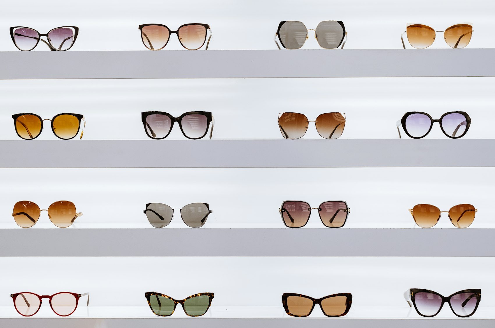

★★★★★
„Fetele m-au ajutat foarte mult să îmi găsesc niște rame care să îmi placă, deși am fost cu 20 de minute înainte de închidere. Au fost drăguțe, nu s-au grăbit și m-au ajutat. Prețuri bune. Recomand!"
Optică medicală · B-dul Ghencea 36
Plimbă cursorul peste titlu
Optică de cartier pe Ghencea, cu oameni care stau cu tine până găsești rama potrivită. Lentile progresive biometrice Excelit Infinity de la Interoptik și prețuri pe care clienții noștri le numesc „pentru toate buzunarele".
Ce găsești la noi
Nu suntem lanț și nu lucrăm pe bandă. Vii, probezi, întrebi, te răzgândești, probezi din nou. Apoi pleci cu ochelarii care ți se potrivesc.
Rame pentru toate formele de față și pentru toate bugetele. Te ajutăm să alegi, nu te lăsăm singur în fața raftului.
Monofocale și progresive, alese după cum îți folosești ochii: la volan, la calculator, la citit.
Cu sau fără dioptrii, cu protecție UV.
Partea la care clienții ne laudă cel mai des. Dacă intri cu douăzeci de minute înainte de închidere, tot stăm cu tine.
Lentile
Lucrăm cu Interoptik. Lentilele progresive biometrice se calculează după măsurătorile ochiului tău, nu după o rețetă standard, așa că trecerea între distanțe se face mai natural.
Dacă porți deja progresive și te deranjează ceva la ele, adu-le și ne uităm împreună ce se poate face.
Întreabă-ne
Ce spun clienții
Copiate cuvânt cu cuvânt de pe fișa noastră.
★★★★★
„Fetele m-au ajutat foarte mult să îmi găsesc niște rame care să îmi placă, deși am fost cu 20 de minute înainte de închidere. Au fost drăguțe, nu s-au grăbit și m-au ajutat. Prețuri bune. Recomand!"
★★★★★
„Foarte mulțumită. Personal amabil și profesionist. Prețuri pentru toate buzunarele. Recomand."
★★★★★
„O vizită plăcută și foarte utilă. Personal amabil și profesionist. Prețuri pentru toate buzunarele. Recomand."
★★★★★
„Profesioniști din toate punctele de vedere. Recomandări pertinente. Prețuri fff bune!"
★★★★★
„Personal foarte amabil, prețuri foarte bune! Recomand!"
★★★★★
„Recomand!"
Unde ne găsești
La stradă, în Sector 6. Sună înainte dacă vrei să te aștepte cineva anume sau dacă vii pentru o problemă mai complicată.
B-dul Ghencea nr. 36
Sector 6, București 061695
Luni – Vineri: 9:00 – 19:00
Sâmbătă: 9:00 – 13:30
Duminică: închis